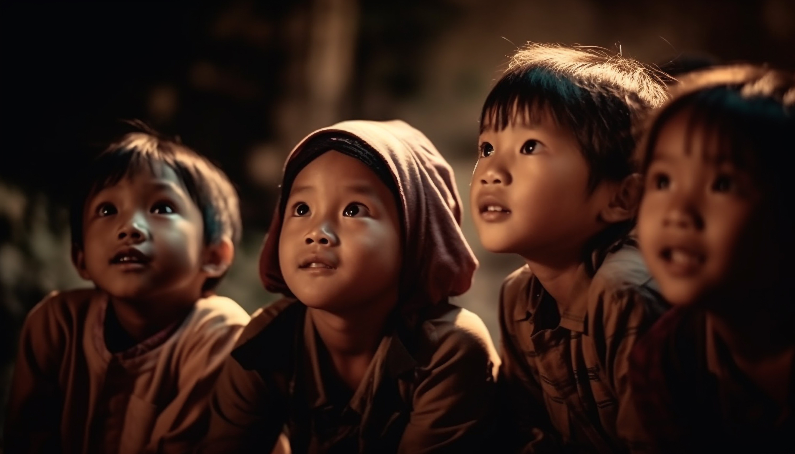
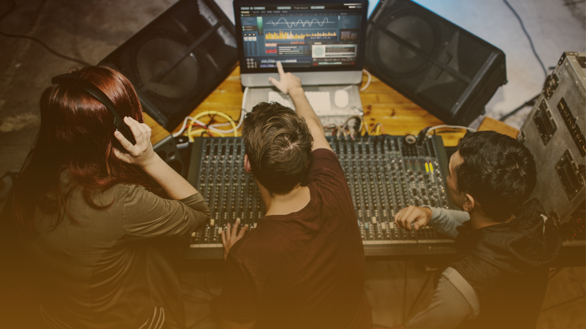

Animation
Animating Faith: Inspiring Stories
What We Do?
The Animation Domain at ACC is dedicated to cultivating a welcoming and inclusive space where everyone, regardless of differences, feels valued and supported. Through our collaborative efforts, we drive forward the organization's goals while fostering a sense of belonging and shared purpose among members. Together, we embody the spirit of faith, progress, and unity, shaping a vibrant community within ACC.
How We Contribute?
- Driving Innovation: The Animation Domain initiates innovative ideas and strategies to propel the ACC forward and actively implements and refines these initiatives to ensure their effectiveness.
- Creating a Welcoming Environment: It provides a welcoming and inclusive space for all members, regardless of individual differences, cultivating a sense of belonging and fostering positive relationships among members.
- Support and Stability: The Animation Domain acts as the backbone of the ACC team, providing unwavering support to ensure the smooth functioning of the organization.
- Promoting Progress and Inclusivity: It serves as a dynamic force for progress within the ACC, actively driving forward the organization's goals while fostering a spirit of community and shared values.
More On Us
The Animation Domain stands as the cornerstone of ACC, embodying a steadfast commitment to progress and inclusivity. At its core, it ignites innovation, constantly generating new ideas and strategies to propel our community forward. But it doesn't stop there, it actively implements and refines these initiatives, ensuring they effectively serve our organization's goals. Within ACC, the Animation Domain creates a welcoming and inclusive space where every member, regardless of differences, feels valued and embraced. This fosters a profound sense of belonging and cultivates positive relationships among our community. Serving as the backbone of our team, the Animation Domain provides unwavering support, ensuring the seamless functioning of ACC. In essence, it acts as a dynamic force, driving us toward our goals while nurturing a spirit of community and shared values.

Liturgy
Behind the scenes, building up worship.
What We Do?
The Liturgy Team is the backbone of ACC, orchestrating sacred ceremonies and guiding through spiritual rituals with reverence and care. From coordinating prayers and leading intercessory sessions to organizing Holy Mass, we ensures meaningful worship experiences. Beyond our formal duties, we offer compassionate support, fostering a sense of belonging.
How We Contribute?
- Facilitating Spiritual Growth: The Liturgy Team provides guidance and support during religious ceremonies, fostering an environment for individuals to deepen their spiritual connections and grow in faith.
- Promoting Unity: Through their organization of communal worship and care, the Liturgy Team helps strengthen bonds within the community, promoting a sense of unity and shared purpose among its members.
- Emotional Support: Beyond their formal duties, members of the Liturgy Team actively listen to individuals, offering emotional support and guidance during times of spiritual reflection and personal struggles.
- A Sense of Belonging: By creating inclusive spaces for confession and prayer, the Liturgy Team cultivates a sense of belonging for all members of the community, regardless of background or circumstance.
More On Us
The Liturgy Team plays a vital role in facilitating the spiritual experiences and communal worship within a religious community. Their responsibilities encompass various aspects of religious ceremonies and services. The team is entrusted with coordinating prayers, conducting intercessory prayers, and organizing the sacred celebration of Holy Mass. Additionally, they guide the faithful through the sacrament of confessions, providing a space for spiritual reflection and repentance. Beyond the formalities, members of the Liturgy Team also extend their support by actively listening to individuals and offering assistance as needed, fostering a sense of community and pastoral care within the religious congregation.

Outreach
Touching Hearts, Changing Lives
What We Do?
The Outreach domain at our college is a dynamic force for community engagement. From our annual mega event uniting diverse backgrounds to monthly acts of kindness, we foster continuous connections and social responsibility. Through fundraising and charitable activities, we amplify our impact, making a positive difference in the lives of those in need. In essence, we're catalysts for building a spirit of community involvement and social impact within our college environment.
How We Contribute?
- Community Engagement Events: The Outreach Team organizes diverse events that bring together members of the college community, fostering unity and collaboration across different backgrounds and beliefs.
- Meaningful Causes Advocacy: The Outreach Team raises awareness and advocates for meaningful causes, empowering students to make a positive impact on societal issues aligned with our faith values.
- Service and Support: The Outreach Team actively engages in service projects and offers support to vulnerable individuals or groups within the college community and beyond, embodying the principles of compassion and empathy taught by their faith.
- Building Bridges: By organizing activities that encourage dialogue and understanding among diverse groups, the Outreach Team plays a crucial role in building bridges of friendship and cooperation, promoting a culture of mutual respect and acceptance within the college.
More On Us
The Outreach domain at our college stands as a beacon of community engagement, driving impactful initiatives that unite diverse backgrounds toward meaningful causes. Our annual mega Outreach draws participants from all walks of life, fostering collective action and igniting change. Complementing this flagship event are our monthly small-scale initiatives, emphasizing acts of kindness and nurturing a continuous bond between our college and the community. Through active participation in fundraising and charitable activities, we amplify our impact, supporting various causes and positively impacting lives. Ultimately, the Outreach domain serves as a catalyst for cultivating a spirit of community involvement and social impact within our college environment.

Audio & Visual
Where faith finds its voice: A symphony of sight and soul.
What We Do?
We, the audio-visual artists, breathe life into spiritual narratives. Dance becomes a silent storyteller, each graceful movement painting a picture of faith. Theatre transforms into a sacred bridge, where powerful stories connect the earthly and the divine. Witnessing these plays is a journey that stirs the soul. Music joins the chorus, a symphony of melody and rhythm uplifting spirits and creating a space for spiritual connection. Together, we weave a tapestry of sight and sound, a sensory experience fostering a profound connection to something greater within our community.
How We Contribute?
- Creative Expression: Dance, theatre, and music offer artistic avenues to explore and express faith, catering to diverse learning styles.
- Enriched Atmosphere: These teams work together to elevate the spiritual environment, fostering a sense of community and connection.
- Deeper Connection: Artistic presentations allow individuals to engage with their faith on a deeper level, both intellectually and emotionally.
- Reaching Wider Audience: The diverse artistic approaches cater to various preferences, potentially connecting with a broader range of individuals within the college community.
More On Us
The fusion of audio and visual arts serves as a dynamic expression of creativity and devotion within our community. Our dance, theatre, and music teams are the driving forces, each contributing a unique layer to our cultural tapestry. The dance team gracefully transforms spiritual narratives into visual poetry through intricate choreography. Theatre serves as a transformative medium, bridging earthly and spiritual realms with compelling storytelling. The music team seamlessly blends melody and rhythm, elevating the spiritual atmosphere and fostering a sense of transcendence and unity. Collectively, these artistic endeavors create a sensory symphony, fostering a profound connection to the divine within our college community, allowing individuals to experience spirituality through the captivating fusion of sight and sound.
Logistics & Hospitality
Blessed To Serve
What We Do?
The Logistics and Finance Domain at ACC ensures smooth operations and financial stability. We manage all financial transactions with transparency and accuracy, set up necessary financial infrastructure, and provide timely reimbursements. Additionally, we support logistics by aiding in the procurement of essential items for events and outreach programs. Through our efforts, we foster responsibility, efficiency, and teamwork, shaping a vibrant, well-organized ACC community.
How We Contribute?
- Ensuring Financial Stability: The Logistics and Finance Domain manages and oversees all financial transactions with transparency and accuracy, ensuring the financial health of ACC.
- Efficient Resource Management: We set up necessary financial infrastructure, including bank accounts for receiving donations, and aid in the procurement of essential items for events, ensuring efficient use of resources.
- Timely Reimbursement: We ensure timely reimbursement for members who spend funds on behalf of ACC, preventing any financial loss and maintaining trust.
- Operational Support: By providing logistical support and aiding in event planning and execution, we ensure the smooth operation and success of all ACC activities.
More On Us
The Logistics and Finance Domain at ACC is dedicated to ensuring the smooth operation and financial stability of the association. We manage and oversee all financial transactions, ensuring transparency and accuracy. Our team sets up and maintains the necessary financial infrastructure to support the association's activities, from receiving donations to reimbursing expenses. Additionally, we provide logistical support, assisting in the procurement of essential items for events and outreach programs. Through our diligent efforts, we foster a sense of responsibility, efficiency, and collaboration, contributing to the overall progress and unity of ACC. Together, we embody the spirit of faith, stewardship, and teamwork, shaping a vibrant and well-organized community within ACC.
Media & Communication
Capturing Faith, Sharing Stories
What We Do?
The Media & Communication team is at the heart of event management and strategic communication. With a keen eye for detail, we create captivating promotional materials, such as posters and captions, that resonate with our audience. Our commitment to comprehensive event coverage ensures every significant moment is captured, reflecting the organization's ethos. Beyond live events, we keep our community informed of key dates and actively enhance ACC's digital footprint with striking videos, photos, and graphics that underscore our professional identity.
How We Contribute?
- Strategic Promotion: We craft engaging materials like posters and captions to ensure effective communication for events.
- Comprehensive Coverage: With meticulous planning, we capture live moments and curate content that embodies ACC's values, offering thorough event coverage.
- Online Presence: Our visually compelling content bolsters ACC's online presence, promoting key events and dates while upholding a professional image.
- Engaging Storytelling: Documenting event stories, we foster community engagement by sharing impactful narratives that connect with our members.
More On Us
The Media & Documentation team serves a pivotal role in event management and strategic communication. They meticulously plan and craft engaging promotional material, including posters and captions. The team ensures comprehensive event coverage, capturing live moments and curating content that aligns with the organization's values. In addition to event coverage, the team systematically communicates significant dates and promotes ACC through visually compelling videos, photos, and graphics, contributing to the organization's professional online presence.